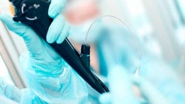

ENDOSCOPÍA
¿Qué es una Endoscopía?
La Endoscopía es la especialidad médica que se ocupa de la prevención, estudio, diagnóstico, tratamiento y rehabilitación de las enfermedades del aparato digestivo y sus órganos asociados. Este procedimiento se lleva a cabo por medio de un endoscopio, el cual brinda la posibilidad de ver el interior del intestino, ya que cuenta con una cámara de video en uno de sus extremos, y al mismo tiempo permite mostrar la imagen a través de un monitor.
¿Para qué sirve una Endoscopía?
La realización de una Endoscopía puede ser solicitada por un médico para determinar o diagnosticar distintos inconvenientes, tales como: Problemas en el esófago; estudiar problemas en el estómago, tales como gastritis, tumores o úlceras gástricas; identificar la causa de hematemesis (vómitos con sangre); realizar el diagnóstico de una hernia de hiato o un reflujo gastroesofágico, hallar la causa de un dolor abdominal superior, pérdida de peso, o dificultad para tragar (disfagia) y tumores digestivos.
Sacar turno